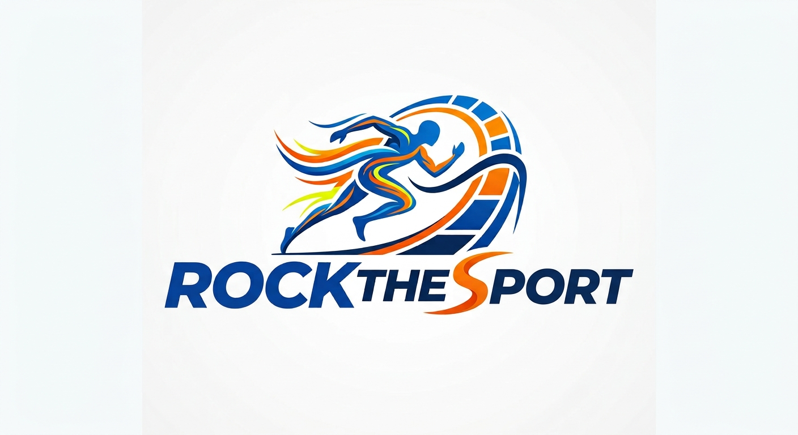

Sobre Nosotros
Somor organizadores de eventos deportivos por todo españa, desde eventos beneficos
para recaudar dinero para niños afectados por enfermedades y otras dificultades hasta hacer
conciencia por la salud. Somos para todos
Eventos Populares
- Noviembre 30. Triatlon de 60 km
- Enero . Inicio del 2027
- Febrero 18. Dia Mundial del Vino. Cada 10 kilometros lleva una botella
- Diciembre 20. Dia Mundial de la Sangria. Cada 10 kilometros lleva una vaso lleno
Eventos Beneficos
-
30 de noviembre:
Triatlón Solidario por la Investigación Infantil.
¡Cada kilómetro cuenta para cambiar vidas!
-
Enero 2027:
"Primeros Pasos por la Esperanza".
Cierre del ciclo benéfico y entrega de resultados.
-
18 de febrero:
Maratón "Por un Mundo Seco".
Recaudación de fondos para proyectos de saneamiento en África.
¡Cada 10 km recorridos simbolizan una botella de vida!
-
20 de diciembre:
Caminata "Copa Llena de Alegría".
Beneficio para comedores sociales en Navidad.
¡Cada 10 km recorridos se entregan vasos de esperanza para familias necesitadas!